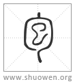

加入收藏
清代 段玉裁《說文解字注》
- 妊也。
二字各本無。今推文意補。下文十三字乃說字形、非說義。則必當有說義之文矣。女部曰。妊者、孕也。子部曰。孕者、褢子也。引伸之爲凡外裹之偁。亦作苞。皆假借字。凡經傳言苞苴者、裹之曰苞。藉之曰苴。
- 象人褢妊。？在中、象子未成形也。
勹象褢其中。巳字象未成之子也。勹亦聲。布交切。古音在三部。
- 元气起於子。子、人所生也。
子下曰。十一月陽气動。萬物滋。人以爲偁。
- 男左行三十。女右行二十。俱立於巳爲夫婦。
左右當作𠂇又。男自子左數次丑、次寅、次卯爲左行。順行。凡三十得巳。女自子右數次亥、次戌、次酉爲右行。逆行。凡二十亦得巳。至此會合。故周禮令男三十而娶。女二十而嫁。是爲夫婦也。
- 褢妊於巳巳爲子。
下巳字衍。巳部曰。巳者、巳也。四月陽气巳出。陰气巳藏。萬物見。成文章。故夫婦會合而褢妊。是爲子也。
- 十月而生。
十月上當有子字。易本命曰。天一地二人三。三三而九。九九八十一。一主日。日數十。故人十月而生。
- 男起巳至寅。女起巳至申。故男年始寅。女年始申也。
淮南氾論曰。禮三十而娶。高云。三十而娶者、陰陽未分時俱生於子。男從子數左行三十年立於巳。女從子數右行二十年亦立於巳。合夫婦。故聖人因是制禮。使男三十而娶。女二十而嫁。其男子自己數左行十得寅。故人十月而生於寅。男子數從寅起。女自己數右行十得申。亦十月而生於申。故女子數從申起。高說與許說同。神仙傳王綱云。陽生立於寅。純木之精。陰生立於申。純金之精。夫以木投金。無往不傷。是以金不爲木屈。而木常畏於金。按今日者卜命。男命起寅。女命起申。此古法也。自元气至此、又詳說从巳之意。